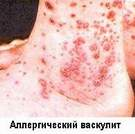
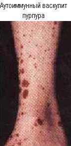
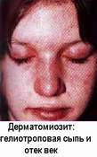
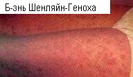
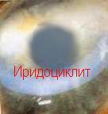
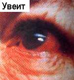
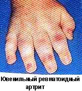

Аллергические васкулиты
При аллергическом васкулите образование иммунных комплексов происходит при небольшом избытке антигена, непосредственно в просвете сосуда. Местом их нахождения может стать любой кровеносный сосуд. Но фиксации иммунных комплексов способствует высокое кровяное давление и турбулентный кровоток, поэтому типичными зонами их отложения, при разной природе антител, служат одни и те же сосудистые области:- клубочки почек
- ресничные тела глаз
- ворсинчатое сосудистое сплетение IV мозгового желудочка
- бифуркации и искривления артерий
- околосуставные и кожные сосудистые сети
- клапаны сердца

Комплексы легче фиксируются в тканях, содержащих антигены, против которых направлена значительная часть входящих в них антител - например, при грибковых альвеолитах - в легких, при гепатите - в печени, при аутоиммунитете против антигенов гломерулярной базальной мембраны - в клубочках почек. Фиксация иммунных комплексов на клетках крови может обусловить их ускоренную элиминацию фагоцитами селезёнки и вызвать тромбоцитопению, лейкопению и даже гемолитическую анемию со спленомегалией.
Иммунокомплексный механизм васкулита участвует в патогенезе всех диффузных и некоторых очаговых форм гломерулонефрита (кроме гломерулопатии с минимальными изменениями), хотя и комбинируется в этих случаях с другими иммунопатологическими реакциями.
Он вносит вклад в механизмы ревматоидного артрита, многих проявлений системной красной волчанки, узелкового периартериита, дерматомиозита, склеродермии, синдрома Шёгрена, смешанных заболеваний соединительной ткани с неорганоспецифическими аутоантителами, узелкового периартериита, аллергических кожных васкулитов, в том числе, болезни Шёнляйн-Геноха (в комбинации с цитотоксической реакцией), болезни Такаясу, криоглобулинемии. Иммунные комплексы - важные участники развития инфекций, протекающих с бактериемией и вирусемией, либо осложняемых персистирующим аутоиммунным ответом: септического эндокардита, проказы, сифилиса, острых и хронических протозоонозов и тропических лихорадок, острого шистоматоза, хронического гепатита, микоплазмоза и многих инфекционных вазопатий. Инфекционный и иммунокомплексный факторы являются решающими при остром диффузном пролиферативном постстрептококковом гломерулонефрите и ревматизме.
Иммунные комплексы и перекрёстный аутоиммунный ответ на собственные антигены нервной ткани, спровоцированный инфекцией, описаны при синдроме Гильена-Барр, а также других демиелинизирующих полинейропатиях, подостром склерозирующем панэнцефалите и боковом амиотрофическом склерозе.

Иммунокомплексный процесс наблюдается при болезнях кожи (герпетиформный дерматит, пемфигус и пемфигоид), глазных болезнях (увеиты, иридоциклиты, ретиниты, конъюнктивиты), заболеваниях ЖКТ (язвенный колит, болезнь Крона, целиакия), эндокринопатиях (тироидит Хашимото, инсулинзависимый сахарный диабет). При всех этих нарушениях он не служит “основным мотором” процесса, а выполняет сопутствующую роль или активен на отдельных этапах болезни, при возникновении осложнений и у предрасположенных к задержке клиренса иммунных комплексов лиц. Иммунокомплексный механизм усматривается и в развитии синдрома Рейтера (уретрит, сакроилеит, конъюнктивит), а также при анкилозирующем спондилите.
Считается, в частности, что иммунные комплексы с участием гликированных белков плазмы крови и сосудистой стенки, а иногда - и ксеногенного инсулина, служат важным фактором, способствующим развитию системной микроангиопатии у больных инсулинзависимым сахарным диабетом I типа, со временем приводящей к гломерулосклерозу, ретинопатии, полинейропатии и нарушению диэнцефальных функций.

Вторичный иммунокомплексный процесс сопутствует лимфолейкозам и другим гемобластозам (лимфомы, лимфогранулёматоз), а также раку лёгких и меланомам кожи.Именно васкулитный тип иммунопатологических нарушений ответственен за раннюю фазу сывороточной болезни и отравление пеницилламином, при которых его симптомы проявляются в классическом виде.
В качестве типового случая системного некротизирующего васкулита, обусловленного иммунными комплексами, можно рассматривать сывороточную болезнь. Она развивается через 8 - 10 дней после однократного введения большого количества ксеногенной сыворотки. Сывороточная болезнь проявляется: повышением температуры, увеличением селезенки и лимфоузлов, протеинурией, лейкоцитозом, артральгиями, кожной сыпью, иногда, геморрагического характера, снижением содержания факторов комплемента в крови.
Симптоматика болезни возникает с появлением в кровотоке антител. Симптомы сохраняются до тех пор, пока в кровотоке находится свободный антиген (область избытка антигена, растворимые иммунные комплексы).
После элиминации антигена симптомы исчезают. Перенесенная сывороточная болезнь оставляет после себя повышенную чувствительность к белкам чужеродной природы: повторная инъекция может вызвать анафилактический шок.
Поздние механизмы сывороточной болезни включают и иные гиперэргические реакции, в частности, ГЗТ.
Системная красная волчанка (СКВ или SLE) - во многом, обусловленное иммунными комплексами, аутоиммунное заболевание кожи и соединительной ткани внутренних органов. Если процесс ограничивается соединительной тканью кожи - говорят о дискоидной красной волчанке. Клиника красной волчанки зависит от того, какая система поражена. На первый план выступают патологические изменения кожи, суставов, почек, крови и мозга. Кроме того, возможно увеличение селезенки, лимфоузлов, а также - симптомы со стороны ЖКТ.
Иммунологический критерий заболевания - высокие титры антиядерных антител, точнее IgG к нативной двухцепочечной ДНК, которые обнаруживаются почти всегда (А.М.Поверенный, 1986). Можно обнаружить антитела к другим ядерным и органоспецифическим антигенам . Среди них - рибонуклеопротеид Смита или SM-антиген - у 30% пациентов, кардиолипин - примерно, у 50% больных (с выраженными тромбогеморрагическими симптомами) и другие. При СКВ, спровоцированной лекарствами, такими как гидралазин и новокаинамид, у 70% поражённых отмечаются и аутоантитела против нативных конформаций гистонового комплекса (А.Клеймэн и соавт., 1983). У 25% больных с поражением ЦНС наблюдаются антинейрональные аутоантитела.
Считается, что при красной волчанке, возможно, при участии поликлональных В-стимуляторов, в частности, вирусов, нарушена аутотолерантность и образуются высокие титры аутоантител, перекрестно реагирующих с многими антигенами. Иммуноглобулины к ДНК, реагируя с соответствующим антигеном ядер, образуют растворимые комплексы, связывающие комплемент. Болезни способствует нехватка C2, C4 и других белков комплемента, что связано с гаплотипом ГКГС DR2.
Эти иммунные комплексы - причина васкулита, полисерозита, эндокардита Либмана-Сакса и нефропатии, а также гемоцитопении. В развитии болезни участвуют и цитотоксические механизмы. Имеется модель СКВ у мышей NZB/NZW. Обнаружена модель заболевания у мышей MRL, в тимусе которых из-за отсутствия или дефекта поверхностного рецептора Т-клеток fas/APO-1 (триггера апоптоза, см. раздел “Механизмы апоптоза”) нарушен процесс внутритимической негативной селекции аутореактивных Т-клонов. В результате аутореактивные Т-хелперы могут персистировать и стимулировать многие клоны В-лимфоцитов к выработке аутоантител самой различной специфичности. Предполагается, что аналогичный механизм имеет место при ранней тяжёлой мультисистемной красной волчанке у детей. При поздних, менее тяжелых формах болезни могут присутствовать похожие дефекты молекул, участвующих в развитии периферических, пост-тимических механизмов толерантности, например CD28-маркера Т-клеток или В7/ВВ1-маркера В-лимфоцитов (Б.Ф.Хайнс, А.С.Фоси, 1994). Это объясняет неорганоспецифический, множественный характер аутоаллергии при СКВ и позволяет рассматривать иммунокомплексный процесс при этом заболевании, как вторичный, по отношению к аутоаллергии.
При других, сходных по патогенезу и клинике системных иммунопатологических поражениях неорганоспецифического характера (ранее именовавшихся коллагенозами) также широко представлены иммунокомплексные процессы, а различия в клинике коррелируют с особенностями спектра аутоаллергии (Е.М.Тан, 1982). Так, при склеродермии типичны аутоантитела к белкам центромера (при наличии синдрома Рейно) и к ДНК-топоизомеразе 1 ( старое название - анти- Sci70, наблюдается при диффузной форме болезни). Но частота их обнаружения не превышает 10%, несмотря на высокую специфичность для данного заболевания. По неизвестным причинам, васкулит при склеродермии имеет характерную тенденцию к исходу в фиброз. Чаще всего вовлекаются кожа дистальных отделов конечностей, ЖКТ и почки, реже - лёгкие. Нередко имеется тяжёлая ишемия дистальных отделов конечностей - феномен Рейно (см. также выше стр. 170 ), в сочетании с кожным кальцинозом, эзофагитом, склеродактилией и телеангиэктазией (CREST-синдром).
Для дерматомиозита типичны ингибирующие аутоантитела к аминоацил-тРНК-синтетазам (антиген Jo-1, частота обнаружения от 5%) и протеинкиназам. Васкулит охватывает скелетные мышцы и кожу. По неясным причинам, это сопровождается резко повышенной частотой злокачественных новообразований различных локализаций - до 8% больных дерматомиозитом страдают онкологическими болезнями (М.Метьюз и соавт. 1983; Д.Стетлер и соавт, 1982).
При синдроме Г.Шёгрена имеется аутоиммунитет к рибосомальным антигенам Ro (30%)и La (10%), в первом случае это коррелирует клинически с развитием гломерулонефрита. Синдром может наблюдаться отдельно, как атрофический сиалоаденит с сопутствующим поражением слёзных и даже потовых желез лица (“сухой синдром”), слизистых желёз вульвы и ануса, зудом. Иногда синдром сопровождает СКВ или ревматоидный артрит. Смешанное заболевание соединительной ткани комбинирует иммунные васкулиты и другие симптомы, вызванные аутоантителами различной специфичности, наиболее часто превалируют антитела к рибонуклеопротеидам (70%). Распространенным иммунокомплексным заболеванием, особенно, в Новом Свете, где поражены до 2% населения, является ревматоидный артрит. Иммунные комплексы, активирующие комплемент, откладываются в сосудах и в синовиальной оболочке суставов. Заболевание протекает как хронический синовиит с повторными обострениями и ремиссиями или постоянно прогрессирует, приводя к деструкции и тугоподвижности суставов (прежде всего, кистей и стоп). Помимо суставов в процесс вовлекаются кожа, где формируются гранулёмы, и реже - сердце, почки, легкие, ткани глаза и др. органы, а иногда - периферические нервы. Достаточно нередко возникает полисерозит. Предполагается, что этиология заболевания может быть связана с провокацией аутоиммунного процесса у лиц с определенными антигенами ГКГС (DR4) инфекционными агентами, в частности вирусом Эпштейна-Барр, и, возможно, микоплазмами, Proteus mirabilis и бореллиями. Типичный иммунодиагностический признак - обнаружение в сыворотке ревматоидных факторов. Они вырабатываются у 90% больных, но бывают и при других иммунокомплексных васкулитах, а также почти у 5% клинически здоровых людей (Р.С.Уильямс, 1982,1983). П.Кристенсен и А.Шрёдер считают их антиидиотипическими образами кокковых Fc-связывающих белков (1990).

Это антитела, преимущественно класса M или G (реже - А и E), к собственным Fc-фрагментам IgG. По В.Аньелло (1980), они перекрестно реагируют с нативными комбинациями ядерных гистонов. Вследствие этого до 40% больных экспрессируют аутоантитела к ядерным гистонам. Формируя иммунные комплексы, ревматоидные факторы активируют лимфоциты, полиморфонуклеары, макрофаги и синовиоциты, что ведет к воспалению. Считается, что особенно важными медиаторами ревматоидного артрита в синовии служат ФНО и ИЛ-1. Под воздействием цитокинов формируется грануляционная ткань, инфильтрированная клетками-участниками воспаления - паннус, деформирующий суставную поверхность и разрушающий хрящ. К ревматоидному артриту относятся также:- синдром Фелти (форма пожилых, с высоким титром ревматоидных факторов, спленомегалией и иммунокомплексной панцитопенией),
- синдром Каплана ( с выраженным узловатым пневмофиброзом - форма, типичная для профессионального ревматоидного артрита шахтёров, возможно, комбинирует иммунокомплексный васкулит и описываемый ниже механизм феномена Артюса),
- болезнь Стилла (ювенильная форма с моноартритом и тяжелыми внесуставными поражениями, но при низком титре ревматоидных факторов).
|
|
|
|
|
|